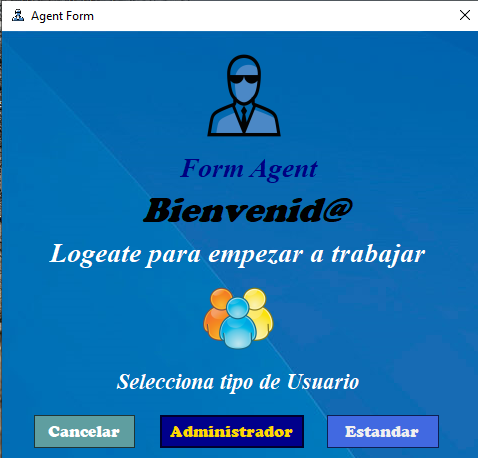
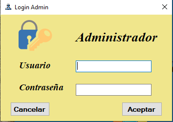
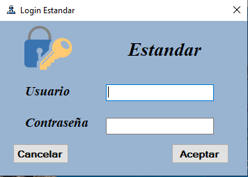
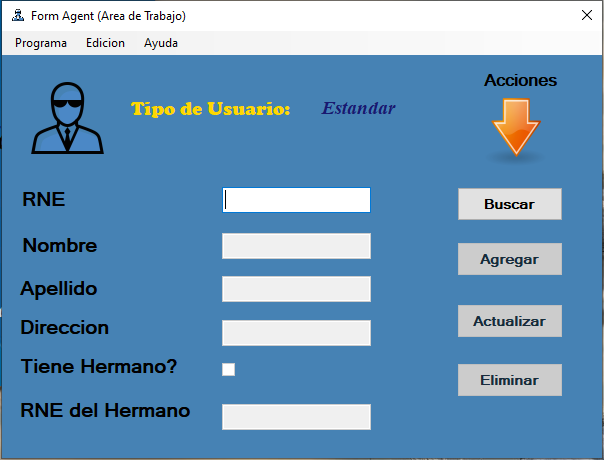
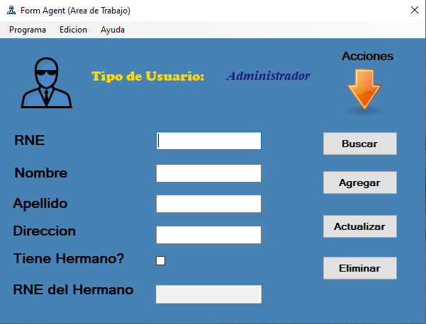
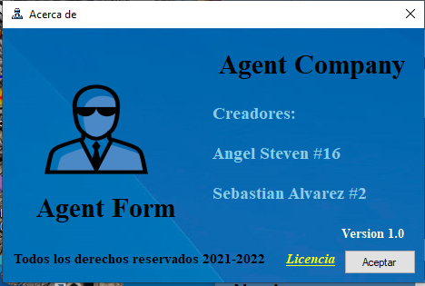

¿Que es Form-Agent?
Creado el 8-2-2022
Es un Sistema de manipulation datos de estudicantes creado para facilitar la insercion, la actualizacion, elimacion y busqueda de los estudiantes.
¿Como Utilizar Form-Agent?
1. Elige el tipo de usuario
tipos de usuario
Selecciona el tipo de usuario si quiere en el que esta registrado.
2. Logearse
Ingreso.
Ingres su usuario dependiendo si es administrador o es estandar.
3. Usuario Estandar
Ingreso.
Al logearse como ususrio estandar solo puede buscar los datos de los alumnos del ministerio de educacion.
4. Usuario Administrado
Uso de aplicacion.
Al logarse como usuario Administrador podra utilizar las funciones como buscar, insertar, eliminar y actualizar.
5. Ayuda

Acerca de...
Al presionar el boton que se encuentra en el menu se le abrira la un submenu con dos botones el segundo le abrira otra ventana
6. Ventana de ayuda
Acerca de..
Tendra un enlace que le llevara a los terminos y condiciones
7. Menu, programa

Programa
Al presionar el programa se le desplegara un submenu donde tendra tres opciones, Nuevo, Cerrar Sesion y Salir
8. Edicion

Edicion
Al presiona edicion tendra la funcion limpiar que limpia todos los tescbox en el programa